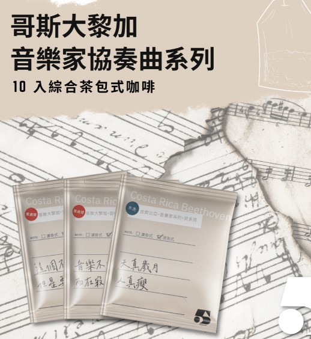

全網最熱銷音樂家系列咖啡豆
哥斯大黎加音樂家系列 蕭邦 F1特別批次
風味：草莓、哈密瓜、甜桃、荔枝、玫瑰、莓果醬
⋯⋯⋯⋯⋯⋯⋯⋯⋯⋯⋯⋯⋯⋯⋯⋯⋯⋯⋯⋯⋯⋯⋯⋯⋯⋯⋯⋯⋯⋯⋯⋯⋯⋯⋯⋯⋯⋯⋯⋯⋯⋯⋯⋯⋯⋯⋯⋯⋯⋯⋯⋯⋯⋯⋯⋯⋯⋯⋯⋯⋯⋯⋯⋯⋯⋯⋯⋯
哥斯大黎加 音樂家系列 莫札特 葡萄乾蜜處理
風味：玫瑰花、 紫羅蘭 、草莓 、哈密瓜 、紫葡萄 、糖果 西瓜 、甜白酒
⋯⋯⋯⋯⋯⋯⋯⋯⋯⋯⋯⋯⋯⋯⋯⋯⋯⋯⋯⋯⋯⋯⋯⋯⋯⋯⋯⋯⋯⋯⋯⋯⋯⋯⋯⋯⋯⋯⋯⋯⋯⋯⋯⋯⋯⋯⋯⋯⋯⋯⋯⋯⋯⋯⋯⋯⋯⋯⋯⋯⋯⋯⋯⋯⋯⋯⋯⋯
哥斯大黎加 音樂家系列 貝多芬 酵素水洗
風味：青蘋果、玫瑰花蜜、柑橘、甜桃
⋯⋯⋯⋯⋯⋯⋯⋯⋯⋯⋯⋯⋯⋯⋯⋯⋯⋯⋯⋯⋯⋯⋯⋯⋯⋯⋯⋯⋯⋯⋯⋯⋯⋯⋯⋯⋯⋯⋯⋯⋯⋯⋯⋯⋯⋯⋯⋯⋯⋯⋯⋯⋯⋯⋯⋯⋯⋯⋯⋯⋯⋯⋯⋯⋯⋯⋯⋯
哥斯大黎加 音樂家系列 巴哈
風味：桂花、草莓、葡萄酒、龍眼、奶油、甜桃
品嚐哥斯大黎加的風土原味～
售價NT 500